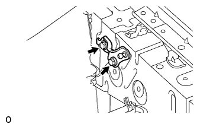

КРОНШТЕЙН КАПОТА > УСТАНОВКА |
| 1. УСТАНОВИТЕ ЛЕВЫЙ КРОНШТЕЙН ОПОРЫ КАПОТА |
|  |
Установите кронштейн стойки капота и закрепите его 2 болтами.
| 2. УСТАНОВИТЕ ЛЕВЫЙ КРОНШТЕЙН КАПОТА В СБОРЕ |
При повторном использовании стойки капота:
 |
Установите 2 стопорных кольца на опору капота в сборе.
 |
Установите кронштейн капота в сборе.
Убедитесь в том, что стойка капота в сборе вошла в зацепление с шаровым шарниром и не вытягивается.